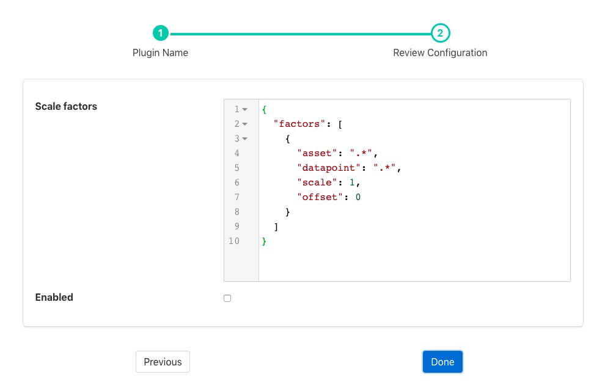

Scale Set Filter¶
The foglamp-filter-scale-set plugin is a filter that allows a scale factor and an offset to be applied to numerical data where an asset has multiple data points. It is very similar to the foglamp-filter-scale filter, which allows a single scale and offset to be applied to all assets and data points. It’s primary uses are for adjusting values to match different measurement scales, for example converting temperatures from Centigrade to Fahrenheit or when a sensor reports a value in non-base units, e.g. 1/10th of a degree.
Scale set filters are added in the same way as any other filters.
Click on the Applications add icon for your service or task.
Select the scale-set plugin from the list of available plugins.
Name your scale-set filter.
Click Next and you will be presented with the following configuration page
 Enter the configuration for your change filter
Scale factors: A JSON document that defines a set of factors to apply. It is an array of JSON objects that define the scale factor and offset, a regular expression that is matched against the asset name and another that matches the data point name within the asset.
Name Description asset A regular expression to match against the asset name. The scale factor is only applied to assets whose name matches this regular expression. datapoint A regular expression to match against the data point name within a matching asset. The scale factor is only applied to assets whose name matches this regular expression. scale The scale factor to apply to the numeric data. offset The offset to add to the matching numeric data. Enable the scale-set filter and click on Done to activate your plugin
Example¶
In the following example we have an asset whose name is environment which contains two data points; temperature and humidity. We wish to allow two different scale factors and offsets to these two data points whilst not affecting assets of any other name in the data stream. We can accomplish this by using the following JSON document in the plugin configuration;
{
"factors" : [
{
"asset" : "environment",
"datapoint" : "temperature",
"scale" : 1.8,
"offset" : 32
},
{
"asset" : "environment",
"datapoint" : "humidity",
"scale" : 0.1,
"offset" : 0
}
]
}
If instead we had multiple assets that contain temperature and humidity we can accomplish the same transformation on all these assets, whilst not affecting any other assets, by changing the asset regular expression to something that matches more asset names;
{
"factors" : [
{
"asset" : ".*",
"datapoint" : "temperature",
"scale" : 1.8,
"offset" : 32
},
{
"asset" : ".*",
"datapoint" : "humidity",
"scale" : 0.1,
"offset" : 0
}
]
}